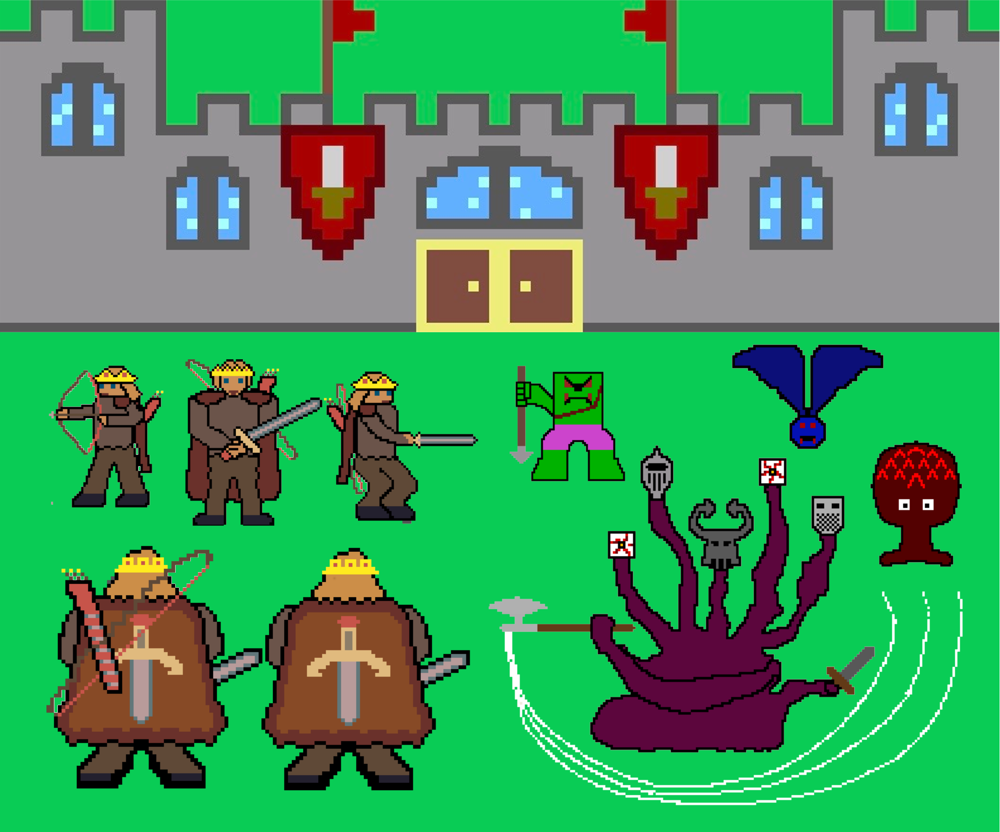

Architecture
Home
GamePlay
Architecture
Here you will find the structure of the code for the game and diagrams illustrating how to interpret the classses and
functions you will find
Usage
The usage of this game is really simple. Once the Installation procedure has been done, just go to the folder
where game.py is in your computer and run
python game.py
in the terminal. Once you have done this, a screen will pop up showing you the first frame of the game. Now in game,
you only need to use WASD to move (W is forwards, A if Left, S is Backwards, and D is Right) and the use J to attack
with your sword, K to shoot your arrows (once acquired), L to place bombs (if you have them), and I to use Health
Potions (If you have them)
Project evolution/narrative
Medieval Quest was a game that evolved in a very simple and straightforward manner. We started by
working on three different fronts:
Architecture
For the architecture of the game, we were able to very easily settle on what we currently use. We started by listing
the classes we would need and separated them in different inheritance levels.
 This slowly evolved into the current architecture.The easiest way to explain it is through a series of nested flow
diagrams. The biggest one shows the overall architecture and run of the code through this diagram.
This slowly evolved into the current architecture.The easiest way to explain it is through a series of nested flow
diagrams. The biggest one shows the overall architecture and run of the code through this diagram.
 As you can see, the most important part of this diagram is the MainQuest, which can be seen in more detail in the
following diagram.
As you can see, the most important part of this diagram is the MainQuest, which can be seen in more detail in the
following diagram.
As you can see,MainQuest has two very important parts, which can both be seen in more detail below. On the left,
you can see how LoadSprites works, and on the right, you can see how MainLoop works.


Visual Origin
In our case, we both had very similar ideas to what our game should look like,
so we just started working on images which eventually developed into bakcgrounds, enemies, and the player.

Game Layout
The game layout was fairly easy to do. When we started we settled on the idea of a 3x3 grid of frames,
since this was a big enough number for the world to feel semi-developed but small enough for it to be
achievable between the two of us. We also decided we should have caves, and both of us agreed that two
caves seemed to be the right number of caves for our 3x3 world. Initially our overall design was the following:
Which afterwards evolved into this design (Which is the hand-drawn sketch of the design we actually use for our levels):